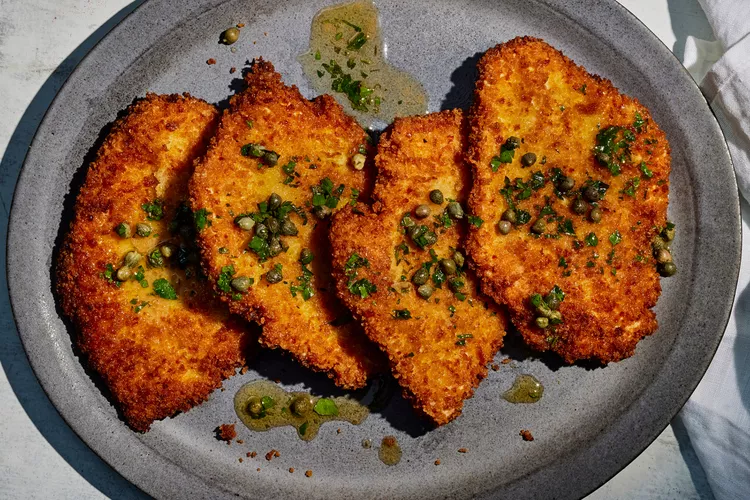

Schnitzel

Description:
A schnitzel is a thin slice of meat that is breaded and fried,
ntil it becomes golden, crispy on the outside, and tender inside.
Ingredients:
- 4 pieces of thinly sliced meat (traditionally pork, chicken, or veal)
- ½ cup flour
- 2 eggs
- 1 cup breadcrumbs
- Salt and pepper
- Oil or butter for frying
- Optional: lemon slices and parsley for serving
Steps:
Prepare the Meat:
- Place each piece of meat between two sheets of plastic wrap.
- Gently pound it with a meat mallet (or rolling pin) until about ½ cm thin.
- Season both sides with salt and pepper.
Prepare the Breading Station:
- Put flour in one shallow plate.
- Beat eggs in a second plate.
- Put breadcrumbs in a third plate.
Bread the Schnitzels:
- Dredge each piece of meat in flour (shake off excess).
- Dip it into the egg mixture.
- Coat it with breadcrumbs, pressing lightly so they stick.
Fry the Schnitzels:
- Heat about 1 cm of oil or butter in a large pan over medium-high heat.
- When hot, add schnitzels and fry for 2–3 minutes per side, until golden brown.
- Place them on paper towels to drain excess oil.
Serve:
- Serve hot with lemon slices on top.
- Common sides: mashed potatoes, fries, salad, or rice.
Appendix:
1 tbsp = 15g
1 cup = 340g
Back to the all recipes list